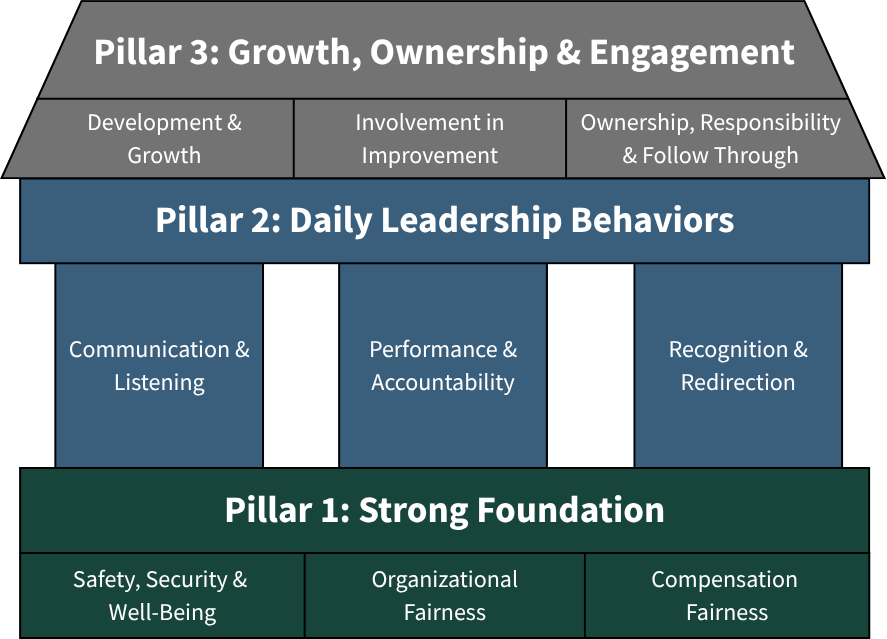

PLOS
The What.
Defining what leadership should look like — consistently, across every level of the operation.
Every plant has leaders. Not every plant has a leadership standard.
When expectations vary by manager, shift, or department, performance varies too. Associates don't know what to expect. Accountability is inconsistent. Problems that get fixed in one area return somewhere else.
The issue is not effort. It is the absence of a defined leadership standard.
PLOS is leadership standard work.
Just as standard work defines how a process should be performed consistently across operators and shifts, PLOS defines how leadership should be performed consistently across supervisors, managers, and plant leadership.
Not a personality style. Not a motivational framework. A practical operating standard — built around the specific conditions and behaviors that drive performance on the manufacturing floor.
PLOS organizes those conditions into three pillars and nine modules. Each pillar builds on the last. Together they define what consistent leadership execution looks like at every level of the operation.
Built Around What Associates Actually Experience
Associates form trust, commitment, and accountability based on a small set of daily experiences:
- Whether they feel safe and treated fairly
- Whether expectations are clear and consistently applied
- Whether effort, progress, and results are recognized
- Whether leaders follow through on what they say
When these conditions are consistently present, supervisors lead more effectively, teams stabilize, and sustained performance becomes possible.
When they are absent or inconsistent — even in high-effort operations — trust erodes, accountability weakens, and the same problems return.
PLOS focuses leadership attention on these specific, observable conditions. Not abstract leadership theory. Not personality-based approaches. Concrete, observable behaviors that every leader at every level can practice and be held accountable to.
The Three Pillars. Nine Modules. One Operating Standard.

Strong Foundation
The first pillar establishes the non-negotiable conditions for consistent leadership. Without these in place everything built on top is unstable.
Safety, Security & Well-Being
Defines how leaders create a safe, stable environment through consistent behavior, speak-up conditions, and visible leadership credibility on the floor. Safety leadership is not compliance — it is how leaders respond, reinforce, and follow through every day.
Organizational Fairness
Establishes how consistent, fair application of standards builds trust and operational credibility. Fairness is experienced through daily decisions — not policy documents. This module is foundational to every other module in the system.
Compensation Fairness
Addresses how leaders communicate and apply compensation decisions clearly, consistently, and credibly. Perceived unfairness in pay creates distrust that undermines every other leadership behavior.
Daily Leadership Behaviors
The second pillar defines how leaders operate day to day — the behaviors associates experience in every shift, every interaction, and every decision.
Performance & Accountability
Establishes how leaders set clear standards, address performance consistently, and hold accountability without avoidance or overreaction. Inconsistent accountability is one of the most common sources of operational variation.
Communication & Listening
Defines how leaders set clear expectations, hear concerns, respond constructively, and create conditions for honest dialogue across the site. Communication is not a soft skill — it is an operational standard.
Recognition & Redirection
Defines how leaders reinforce what is working and redirect what is not — specifically, observably, and consistently. Recognition that is generic or inconsistent loses its impact. Redirection that is avoided or unpredictable creates uncertainty.
Growth, Ownership & Engagement
The third pillar extends leadership consistency into how the operation improves, how ownership is built, and how people develop over time.
Ownership, Responsibility & Follow-Through
Defines how leaders build genuine ownership — through clarity, authority, visible commitment tracking, and consistent follow-through that others can rely on.
Involvement in Improvement
Establishes how leaders engage the workforce in identifying and solving operational problems — creating a culture of practical improvement driven by the people closest to the work.
Development & Growth
Defines how leaders identify, develop, and retain the people who will sustain performance over time — connecting individual growth to operational continuity.
PLOS Is Not a Training Program.
PLOS does not teach leadership theory. It does not rely on personality assessments or style frameworks. It does not produce a certificate or a completion record.
PLOS defines the operational standard for leadership behavior across the site — what leaders are expected to do, how they are expected to communicate, hold accountability, recognize performance, and follow through.
The standard means nothing without a system to execute it consistently over time. That is what LES provides.
One Standard. One Execution System. One Operating Model.
A defined standard without an execution system becomes a document. LES turns the PLOS standard into daily operational behavior.
Together they create something neither can create alone — consistent leadership execution, sustained over time, across the full site.
Ready to See What Leadership Standard Work Looks Like in Your Operation?
The first conversation is a straightforward discussion about where your operation is and whether a leadership system makes sense.